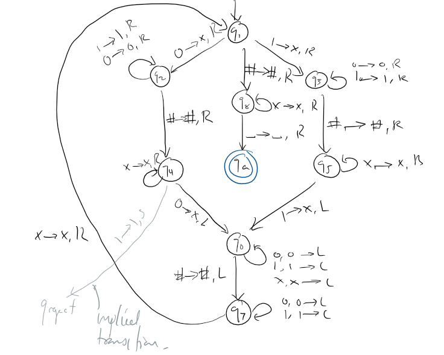
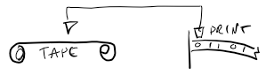
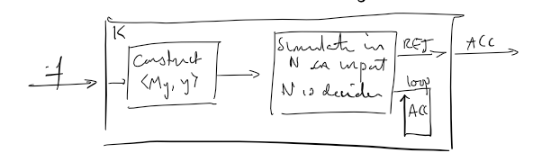
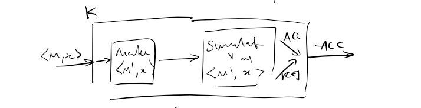
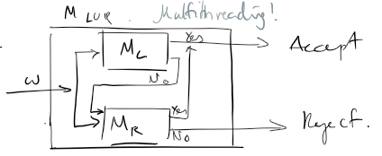
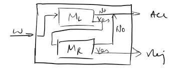
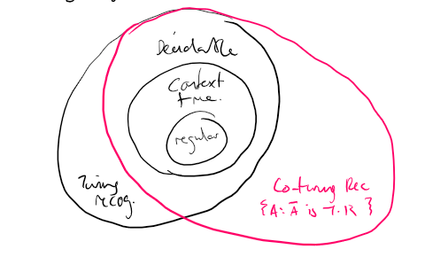

An alphabet is a non-empty set of symbols, usually denoted \(\Sigma = \{a,b,c,\dots\}\). \(\renewcommand{\epsilon}{\varepsilon}\)
A language is then a (potentially infinte) set of finite strings (words) over an alphabet. The set of all words is denoted \(\Sigma*\).
In CS, we can model every decision problem as a question "is a given string in a given language L?", thus, one can see the usefulness of formal languages.
A deterministic finite automata (DFA, also referred to as a finite state machine) is comprised of:
\(Q\) the finite set of states
\(\Sigma\) the alphabet set
\(q_0 \in Q\) the start/initial state
\(F \subseteq Q\) final/accept states
\(\delta : Q \times \Sigma \longrightarrow Q\) the transition function between states.
And is denoted by the 5-tuple \(M=(Q, \Sigma, q_0, F, \delta)\).
The DFA can either be represented in a state diagram, or in a transition table:
A DFA. Every "transition" the DFA reads one symbol from the input string. States which are double circled (or annotated with stars) are finish states, and states with a blank arrow pointing in are start states. There must be one arrow for every possible incoming letter.
\(\varepsilon\) represents the empty string. Any DFA with an input of \(\varepsilon\) will halt immediately on the start state. \(\varepsilon \in \Sigma* \).
\(L = \{\} = \varnothing\) is the empty language - note that \(L = \{\varepsilon\}\) is not empty.
A monoid is a tuple of a set, an associative binary equation, and an identity:
\((\mathbb{N}_0, +, 0)\) where + is integer addition, and \(\mathbb{N_0} \) are nonnegative integers.
\((\Sigma*, \circ, \varepsilon)\) where \(\circ\) is string concat, is a monoid.
Note well that the concat symbol \(\circ\) can also be written \(\cdot\) or omitted entirely.
Formally, the way a DFA computes can be defined with the help of the extended transition function:
\[\hat{\delta} : Q \times \Sigma* \longrightarrow Q\]
Which can be recursively defined (in a haskell like form) over a string \(w = w' \circ a\) as
\begin{align}
\hat{\delta}(q, \varepsilon) &= q\\
\hat{\delta}(q, w' \circ a) &= \delta(\hat{\delta}(q, w'), a).
\end{align}
The accepted language of a DFA \(M = (Q, \Sigma, q_0, F, \delta)\) is \(L(M)\), such that
\[L(M) = \{ s \in \Sigma* : \hat{\delta} (q_0, s) \in F \}.\]
The run of M on a word \(s\) is the path of states M goes through for \(s\):
The run of M on \(\varepsilon\) is trivially \(q_0\)
The run of M on a string \(s_0..s_n \neq \varepsilon\) is \(r_0..r_n\) such that
\[r_0 = q_0,\; \forall i \in [1..n] \; r_i = \delta(r_{i-1}, s_i)\]
The run is an accepting run is a run that ends in an accepting state, thus \(s\) is accepted if its run is accepting - we can also define \(L(M)\) using accepting runs.
Regular Languages
A language L is regular if it is accepted by some DFA.
Trivially, the empty language \(L=\varnothing\) is regular (any DFA with no accept states), and \(\Sigma* \) is regular (define \(\delta(q_0, \_) = q_0\)).
Naturally not all languages are regular, one particular one to note is that the language of (binary) palindromes is not regular.
Since languages are sets of strings, we can naturally perform set operations: \(\overline{L}, L \cap M, L \cup M\). There are also a few string-specific operators, such as
reverse L: reverse all strings in L
truncate L n: trim all strings in L to at most \(n\) long
concat L1 L2: like cross product, but concactenating strings together instead of tuple pairing
But the main question is: are the results of these operations also regular languages?
For completement: where \(\overline{L} = L \setminus \Sigma* \), this is closed, as one can just invert the accept and reject states of the DFA.
For intersection: given \(L_1, L_2\), \(L_1 \cap L_2\) is regular, this is closed. Given \(M_1 = (Q_1, \Sigma, q_1, F_1, \delta_1)\) and \(M_2 = (Q_2, \Sigma, q_2, F_2, \delta_2)\), we can construct an intersection automaton like the following:
We define \(M_3 = (Q, \Sigma, q_0, F, \delta)\) as the intersection automaton of \(M_1, M_2\), and define it like follows:
\(Q = Q_1 \times Q_2\)
\(q_0 = (q_1, q_2)\) (note how states are labelled with pairs)
\(F = F_1 \times F_2\)
\(\forall a \in \Sigma, \forall x \in Q_1, \forall y \in Q_2:\)
\[\delta((x,y), a) = (\delta_1(x,a), \delta_2(x,a)).\]
Note that \(L_1\) regular, \(L_2\) regular \(\implies L_1 \cap L_2\) regular is a one-way implication. If we take \(L_1\) to be the set of palindromes, \(L_2\) being all zeroes 0*, their union is clearly regular, but the separate languages are not.
For union, this is also closed. We can similarly construct a union automaton.
Given two machines \(M_1 = (Q_1, \Sigma, q_1, F_1, \delta)\) and \(M_2 = (Q_2, \Sigma, q_2, F_2, \delta)\) -- note the deltas are the same, construct a machine \(M_3 = (Q, \Sigma, q, F, \delta)\) as
\(Q = Q_1 \times Q_2\)
\(q = (q_1, q_2)\)
\(F = (F_1 \times Q_2) \cup (F_2 \times Q_1\)
To make the two \(\delta\)s the same, you can include the transitions in one as redundant transitions in the other.
Set difference is closed, since \(L_1 \setminus L_2 = L_1 \cap \overline{L_2} \).
Set reverse \(L^{rev}\) is... well it's closed, but it's not so simple with only DFAs. Intuitively, we want to reverse all the arrows, and make all the finish states start states, and vice versa, but of course, more often than not, this'll break a DFA rules, which means we need to introduce another abstraction:
A non-deterministic finite automata, an NFA, is like a DFA, but you no longer have so much of the restrictions.
An NFA can be defined as a five tuple of
\(Q\) a finite set of states
\(\Sigma\) a finite alphabet
\(q_0\) an initial state
\(F \subseteq Q\) accept states
\(\delta\) the transition function, defined as
\[\delta : Q \times (\Sigma \cup \{\varepsilon\}) \longrightarrow 2^Q\]
Yep - that's right, an NFA can have empty string transitions (epsilon transitions), and a single letter can lead to multiple (a set of) states.
An NFA. Note the multiple possible transitions, missing transitions, and epsilon transitions.
Going back to our \(L^{rev}\), we still can't have multiple start states, however, we can merely add a new start state, and add \(\varepsilon\)-transitions to all the would've-been start states.
A DFA has a clear, linear progression, but how does an NFA run? An NFA runs like a multiple world theory, where every time the NFA encounters multiple possible transitions, the NFA "branches" into multiple worlds which each going to one possible transition.
If an NFA world reaches a state with no possible transitions, it crashes, and is considered a reject by default.
As long as at least one world reaches a finish state, the NFA run is considered an accept.
A computer simulating an NFA would basically be doing a brute force DFS/BFS search.
An NFA branching, and one branch reaching a finish.
We can think of DFAs as being strict subsets of NFAs, where there can only be one world and other special conditions.
We want to use \(\delta : Q \times \Sigma_\varepsilon \longrightarrow 2^Q\) to define \(\hat{\delta} \). (Note \(\Sigma_\varepsilon = \Sigma \cup \{\varepsilon\} \) for convenience).
\[\hat{\delta} : Q \times \Sigma* \longrightarrow 2^Q.\]
Say that \(\forall q \in Q\, s \in \Sigma*,\; \hat{\delta}(q, s) =\) all states in Q such that there exists a run from \(q\) upon reading string \(s\). i.e. all reachable states.
The run of an NFA M on a word \(s = s_1 .. s_n\) is the sequence of states \(r_0 .. r_n\), such that
\(r_0 = s_0\)
\(\forall i \in [1..n], \; r_i \in \delta(r_{i-1}, s_i)\)
An accepting run is then a run which ends in an accept state.
To define the extended transition function however, we need to first of all look at epsilon-closure: ECLOSE().
Epsilon Closure is a function \(\textrm{ECLOSE}: Q \longrightarrow 2^Q\) which denotes all states that can be reached from a starting state \(q\) only by \(\varepsilon\)-transitions.
The Extended Transition Function \(\hat{\delta}\) defined \(\forall q \in Q,\; \forall s \in \Sigma* \setminus \{\varepsilon\}: s = wa\) where \(w \in \Sigma* \;\land \;\; a \in \Sigma \). In plain english: for all states \(q\), and for all non-empty strings \(s\) which are decomposed into \(w\), the prefix, and \(a\), the last letter:
\begin{align}
\hat{\delta} (q, \varepsilon) &= \textrm{ECLOSE}(q)\\
\hat{\delta} (q, wa) &= \textrm{ECLOSE}(\bigcup_{q' \in \hat{\delta}(q,w)} \delta(q',a))
\end{align}
Thus, the language accepted by an NFA can be defined in two ways, either as the set of all strings whose extended transition functions contain some finish state,
\[L(M) = \{s \in \Sigma* : \hat{\delta} (q_0, s) \cup F \neq \varnothing\}\]
or the set of all strings which have an accepting run.
Reduction to DFA
Are NFAs more powerful than DFAs? And by that, we mean can NFAs accept languages which DFAs can't?
Well the answer to that is no. NFAs can reduce to DFAs. Similar to how one DFA can simulate two DFAs like in intersection automata, we can do something similar for simulating an NFA.
An NFA's state information can be captured by a set of states, so we can just have a DFA with states corresponding to \(2^Q\) in the NFA, and transitions between them.
Subset Construction. Let \(N = (Q, \Sigma, q_0, F, \delta)\) be the NFA we want to convert. Let the resulting DFA be denoted \(M = (Q_d, \Sigma, q_d, F_d, \delta_d)\).
M has a state for every subset of N: \(Q_d = 2^Q\). This includes the empty subset \(\varnothing\), which simulates N "crashing".
The start of NFA is \(q_0\), but since we have to consider \(\varepsilon\)-transitions, \(q_d = \textrm{ECLOSE}(q_0)\).
Finish states are all subsets of N that contain N's finish states, \(F_d = \{X \subseteq Q : X \cap F \neq \varnothing\} \).
Given a starting set \(X\) and a letter \(a\), we reach the set of all possible states reached in N by \(\delta(X,a)\) followed by ECLOSE:
\begin{align}
\delta_d (X,a) &= \bigcup_{x \in X} \textrm{ECLOSE}(\delta(X,a)) \\
&= \{z : \textrm{ for some } x \in X, z \in \textrm{ ECLOSE}(\delta(X, a))\}
\end{align}
Of course, drawing all of these states is not feasible for any significant number of NFA state0s, especially as there would probably be a lot of redundant states, and thus the machine should be built up incrementally. Start from \(\textrm{ECLOSE}(q_0)\) and work from there.
In general, this means that a language is regular iff it is accepted by a DFA iff it is accepted by an NFA.
A Regular Expression (RegEx) is a compat way to describe a (regular) language. It can be defined with the following 6 rules:
R = \(a\) for some \(a \in \Sigma\)
R = \(\varepsilon\)
R = \(\varnothing\)
R = \(R_1 + R_2\) (or: \(R_1 \cup R_2\))
R = \(R_1 \cdot R_2\) (concat: more often \(R_1 R_2\))
R = \(R_1*\) (0 or more, called the kleene star)
Sure, "regex" on most systems have way more symbols to make life easier, but this is sufficient to generate all regular languages.
In terms of operator precedence, it goes \(*, \cdot, +\).
Some examples then, over \(\Sigma = \{a,b\}\):
(a+b)*: effectively \(\Sigma* \).
(a+b)*(a+bb), any word which ends in "a" or "bb".
(aa)*(bb)*b, any word made up of even "a"s followed by even "b"s, ending in a "b".
(aa+b)*, all consecutive "a"s must be of an even number.
Often, if a regex can be understood in plain english, one can turn that regex into a DFA or NFA directly via creative thinking, but there is a modular algorithmic way of doing so, since
Regex to NFA
Theorem. A language is accepted by an NFA/DFA \(\iff\) it is generated by a regex.
Proof. We have two algorithms, one to turn a regex to an NFA, and vice-versa.
Regex to NFA
This can be done modularly based on the recursive definition of a regex string. Our base cases (below) can be modelled by three different "modules":
Then we have our recursive / inductive cases: \(R_1 + R_2\), \(R_1 \cdot R_2\), and \(R*\). A rectangle, in this case, represents a whole machine.
As an aside have a think about the language \(\varnothing* \). What does that make? Well, concating \(\varnothing\) with anything is just ... \(\varnothing\), but the definition of kleene star is 0 or more times: i.e. \(\{\varepsilon\} \cup \varnothing \cup \varnothing^2 \cup \dots\), thus \(\varnothing* = \{\varepsilon\}.\)
NFA to Regex
This is better explained going along with an example:
Our goal is to slowly eliminate all the nodes one at a time, reflecting their effect by changing arcs into smaller regex expressions. First though, we need to add a start \(q_s\) and unique final \(q_f\) state and transition to them with epsilon:
The start state is a source and the finish state is a sink
Start by eliminating \(q_3\). Possible paths are \(\langle q_2,q_3,q_2 \rangle :10*\) and \(\langle q_2, q_3, q_f\rangle : 1\varepsilon = 1\). Thus, we can have a self loop on \(q_2\) to be \(10*\) and modify \(q_2 \longrightarrow q_f\) to be \(1 + \varepsilon\)* to represent the two possible choices. Then, \(q_3\) becomes redundant and can be removed.
* Technically, the transition \(q_2 \longrightarrow q_f : \varepsilon\) remains unaffected, but since we also have a new transition \(q_2 \longrightarrow q_f : 1\), we simplify the two parallel transitions into one: \(1 + \varepsilon\). This is very important to note.
Eliminate \(q_2\) using a similar process.
Eliminate \(q_1\)
Finally, eliminate \(q_0\)
Then, we simply read off the last remaining transition for our regex.
Now sure, it's not the cleanest, shortest, or most efficient, but it is a regex, and that's all that matters.
$$\tag*{$\Box$}$$
Generalised NFA
A Generalised NFA (GNFA) is a tuple \((Q, \Sigma, \delta, q_{start}, q_{accept})\) where
\[\delta : (Q \setminus \{q_{accept}\}) \times (Q \setminus \{q_{start})\} \longrightarrow \mathfrak{R}.\]
Which the fraktur blackletter \(\mathfrak{R}\) means the set of all regular expressions.
For simplicity \(q_0 = q_{start}\) and \(q_f = q_{accept} \). Note the unique start and finish states.
\(q_0\) must be a source with outgoing transitions to all other states.
\(q_f\) must be a sink with incoming transitions from all other states.
These transitions can be \(\varnothing\), i.e. nothing.
The run of a GNFA M on a word \(s\) is a sequence of states \(r_0 .. r_n\) such that \(r_0 = q_0\), and
\[\exists s_1 .. s_n \in \Sigma* : s = s_1 .. s_n \textrm{ and } \forall i \in [1..n] \; s_i \in L(\delta(r_{i-1}, r_i)).\]
Plain english: \(s\) can be broken down into substrings such that there is a transition that matches each substring.
Theorem. Every NFA can be converted to an equivalent GNFA. This is techically what we have done in the NFA to Regex section, but with the \(\varnothing\) lines omitted for simplicity, which they often can be.
With this fact we can now define our elimination process using some very complicated maths language.
Assuming we have already converted our NFA to a GNFA, and we want to eliminate a state \(q_1\), then for all pairs \(q_a, q_b \in (Q \setminus \{q_f, q_1\}) \times (Q \setminus \{q_0, q_1\}\) (pairs which do not include start and finish states):
\begin{align}
\delta' (q_a, q_b) &= \delta(q_a, q_b) \\
&+ \delta(q_a, q_1) \cdot [\delta(q_1, q_1)*] \cdot \delta(q_1, q_b).
\end{align}
i.e. The existing a to b, or a to 1, any number of 1s, then 1 to b.
Let \(L = \{0^n1^n : n \in \mathbb{N}\}\): i.e. equal number of zeroes and ones. Is this regular?
Intuitively, it isn't, since one would need to keep track of both the number of zeroes and ones, and thus would need inifite memory, impossible on a finite state machine. But how do we formally prove this?
We can use closure properties, especially because its quick:
Proof. i.e binary strings with equal zeroes and ones. Suppose L is regular. We know \(0*1*\) is regular, thus by closure properties \(0*1* \cap L\) should be regular ... right?
Nope: \(0*1* \cap L = 0^n 1^n\) which is known to be irregular. $$\tag*{$\Box$}$$
But if we can't, there's two main ways.
Proving Nonregularity: Myhill-Nerode
If \(\hat{\delta}(q_0, \textrm{cat}) = \hat{\delta}(q_0, \textrm{rabbit}) = \hat{\delta}(q_0, \textrm{rat})\), then we can say these three strings are equivalent.
These can be thought of as equivalent relations (remember cs130?), and following on from this, we can partition \(\Sigma* \) into equivalence classes based on what states they end up in.
Definition. The index of a language is its number of equivalence classes. This can be written \(\equiv_L\).
Strings \(x,y\) are distinguishable in language L, if there exists a certifier string \(z \in \Sigma* \), such that \(xz \in L\) and \(yz \not \in L\).
Conversely, if two strings \(x,y\) are indistinguishable, we write \(x \equiv_L y\) where L is the language we're talking about.
Note: \(x, y\) both do not have to be in L. As long as \(xz \in L\) and \(yz \not \in L\) then this is sufficient.
Since DFAs have finite states, a regular language must have finite equivalence classes.
Thus if a language has infinite equivalence classes, it can't be regular:
Theorem. (Myhill-Nerode) L is a regular language if and only if \(\equiv_L\) is finite.
Proof structure for Myhill-Nerode:
Come up with an infinite set of strings.
Either: Come up with a cerificate for a string \(i\) that distinguishes \(i\) from every other string simultaneously
Or: Come up with separate certificates that distinguish every \(i,j\) pair separately
i.e, prove pairwise distinguishability.
Example. Take the set of strings \(0* = \{\epsilon, 0, 00, 000, \dots\} \). We claim that these are all pairwise distinguishable.
Proof. For string \(0^k\), take string \(1^k\) as certifier. That is: 0 has certificate 1, 00 has 11, 000 has 111, etc.
Note that for 0 with certificate 1, \(01 \in L\) but \(001 \not \in L, 002 \not \in L, \dots\) Same goes for all the others.
Thus every string is pairwise distinguisable from every other. $$\tag*{$\Box$}$$
Example. This language is basically words with less "a"s than "b"s.
Proof. Take the set of strings \(a*\). For string \(a^r\), string \(b^{r+1} \) distinguishes \(a^r\) from every string \(a^s : s > r\). Thus, we can always find a distinguisher.
$$\tag*{$\Box$}$$
Proof. Take the set of strings \(1*\). We need to individually pairwise distinguish them this time.
Take any two strings \(1^i, 1^j\) (assuming \(i < j\) for convenience). Pick any prime \(p : p < i \land p > 2\)
\(\implies p + 0(j-i)\) is prime, obviously.
Since \(p > 2,\; j-i > 0,\; p + p(j-i)\) is not prime.
Thus let's look at the series \(s_n = p + n(j-1)\). i.e.
\begin{align}
&p + 0(j-i) \\
&p + 0(j-i) \\
&\vdots \\
&p + (p-1)(j-i) \\
&p + p(j-i) \\
\end{align}
there must be a switch from being prime to not being prime, between \(s_0\) and \(s_p\). Let \(k \in [1..p] \) be the first such switch at \(s_k = p + k(j-i)\).
Thus, \(p + (k-1)(j-i)\) is prime whilst \(p + k(j-1)\) is not. Therefore, we make the certificate
\[z = 1^{p + (k-1)(j-i) -i}.\]
Note that
\[1^i \cdot z = 1^{p + (k-1)(j-i)} \textrm{ which is prime,}\]
Whereas
\[i^j \cdot z = 1^{p + (k-1)(j-i) + (j-1)} = 1^{p + k(j-i)} \textrm{ which is not.}\]
That was involved. $$\tag*{$\Box$}$$
Proving Nonregularity: Pumping Lemma
Infiniteness or Finiteness
Looking at given a DFA, can we determine whether or not it accepts a language of an infinite length?
Well, it must have a cycle that is (a) reachable from the start and (b) can reach the accept state: cycle => inf words
But if we have infinite words, it must be necessary to have a cycle, since the machine itself is finite: inf words => cycle.
Thus there is an if and only if. We can use this princple to find another way of proving irregularity.
Pumping Lemma
Lemma.if L is a regular language,
then there exists an integer \(m \in \mathbb{Z}^+\), the pumping number, such that for any string \(w \in L : |w| > m\) (w longer than m), \(w\) can be decomposed into \(xyz\), where
\begin{array}
& |xy| \leq m & |y| \geq 1 & \forall i \in \mathbb{N}_0,\, xy^i z \in L.
\end{array}
Usually referred to as "xy is short, y is nonempty". \(y\) is the string being "pumped": able to be repeated infinitely (i.e. cycle in the DFA).
Proof. Let \(M = (Q, \Sigma, q_0, F, \delta)\) be a DFA for a language L. Let \(m = |Q|\).
Consider a sufficiently long word \(w \in L : |w| \geq m\) and the run of \(w\) on M: \[(r_0 r_1 \cdots r_{|w|}) : r_0 = q_0, r_{|w|} \in F, \forall j \in {0..|w|}\; r_j \in Q\]
i.e. A run of \(|w|\) states.
By the pidgeonhole principle (If you have \(n\) boxes and more than \(n\) items, at least one box will have two items in), there must be a loop in the list of states. That is,
\[\exists j_1, j_2 : j_1 < j_2 \land r_{j_1} = r_{j_2}\]
Let's say this is the smallest possible \(j\)s; the earliest possible loop. This may be a self loop.
This is why we have to \(|w| \geq m\). There are only \(m-1\) "boxes" (\(q_0\) doesn't count the first time round, since we enter without reading) so we can pideonhole.
Since we say \(j_1\) is the smallest possible, either \(j_1 = 0\) or the partial run \((r_0 \cdots r_{j_1})\) has no repeating states, \(\therefore j_1 \leq |Q| = m\).
Also \((r_{j_1} \cdots r_{j_2})\) is a loop in the graph.
Let \(x\) be the substring that runs over \((r_0 \cdots r_{j_1})\).
Let \(y\) be the substring that loops \((r_{j_1} \cdots r_{j_2})\).
Let \(z\) be the rest of \(w\).
Thus \(|y| > 0 \land |xy| \leq m\).
This loop of \(y\) can be repeated infinitely, or skipped entirely, thus it should be trivial that
\[\forall i \geq 0,\; x y^i z \in L. \tag*{$\Box$}\]
NOTE WELL that this is not an if and only if. , and , but not pumpable strings \(\implies\) L regular.
L regular \(\implies\) pumpable strings
Contrapositively unpumpable strings \(\implies\) L irregular
but pumpable strings \(\mathrel{\rlap{\hskip .75em/}}\implies\) L regular. You cannot use the pumping lemma to prove something is regular.
Use the contrapositive (unpumpable strings \(\implies\) L irregular) to prove irregular languages.
Proof structure for using pumping lemma: This is mandatory and must be clearly shown
Suppose L is regular (for contrapositive). Then, there must be a pumping number \(m\) for L.
Choose some string \(w \in L : |w| \geq m\).
Let \(w = xyz\) be some arbitrary decomposition such that \(|xy| \leq m,\; |y| \geq 1\)
Pick any integer \(i\) which breaks the pumping lemma: \(xy^iz \not \in L\)
Proof. Suppose L is reguar. Let \(m\) be the pumping length of L.
Let our string \(w = 1^q : q \geq m\) and \(q\) is prime.
A grammar is a series of rules to form words: <sentence> -> <noun_phrase> <verb phrase> <noun phrase>
Recall Backus-Naur form from A level Comp Sci.
A grammar is a tuple \((V, \Sigma, R, S)\) where
\(V\) is a finite set of variables or non-terminals
\(\Sigma\) is a finite alphabet (of terminals)
\(R\) is a finite set of "production rules": the things that go \(\alpha \longrightarrow \beta\) where if you have an \(\alpha\) you can apply the rule and replace it with \(\beta\)
\(S \in V\) is the start variable
If \(\alpha \implies \beta\) then \(\alpha\) yields \(\beta\) (it might be a single not a double arrow but what do I care -- it's just an arrow.)
If you can have a path of successive yields from the start variable, to a desired string \(w\), this is a derivation of \(w\) from G (the grammar). We write \(S \overset{*}{\implies} w\).
Example. Let \(G = (\{S\}, \{0,1\}, R, S):\)
\begin{align}
R := S &\longrightarrow 0S1 \\
S &\longrightarrow \epsilon
\end{align}
We can have \(S \implies 0S1 \implies 00S11 \implies 000S111 \implies 000111\)
This path is a derivation of 000111 from G. S yields 0S1 which yields 00S11, etc.
We can see that these grammars are more powerful than Regular languages already, since this is \(\{0^n1^n\} \).
The language of a grammar \(L(G) = \{w \in \Sigma* : s \overset{*}{\implies} w \}\) -- that is, all strings derivable via G.
Example. Take \(G = (\{S\}, \Sigma, R, S) :\)
\[R := S \longrightarrow S\]
\(L(G) = \varnothing\), since this grammar can never yield anything (because it never terminates)
Derivation
Take \(G = (\{S\}, \{0,1\}, R, S :\)
\begin{align}
R:= S &\longrightarrow 0S1S &\pod{r_1} \\
S &\longrightarrow 1S0S &\pod{r_2} \\
S &\longrightarrow \epsilon &\pod{r_0}
\end{align}
A leftmost derivation means always expanding the leftmost variable.
\[S \implies 0S1S \implies 01S0S1S \implies 0010S1S0S1S \implies \cdots \implies 010101.\]
A rightmost derivation should thus be obvious.
A parse tree shows the order of derivation in, unsurprisingly, a tree.
A grammar is ambiguous if it can be generated via multiple parse trees (of a single directional derivation).
Ambiguity is generally not desired, however it is a part of the grammar, and not the language itself.
Most grammars can be rewritten to be non-ambiguous, but there are some "inherently ambiguous" grammars.
Chomsky's Heirarchy of Grammars
Yes, That Chomsky, the guy who also wrote stuff like Manufacturing Consent.
Chomsky puts grammars in a heirarchy, with each larger rank containing all the languages of the previous rank.
Given \(G = (V, \Sigma, R, S)\) and \(A, B \in V, x \in \Sigma*, \alpha, \beta, \gamma, w \in (V \cup \Sigma*)\), if
Type 3.
\[
\begin{array}{} A \longrightarrow xB \\ A \longrightarrow x \end{array} \;\;\textrm{ xor }\;\;
\begin{array}{} A \longrightarrow Bx \\ A \longrightarrow x \end{array}
\]
Are the only rule forms permitted, it is a Regular language, with the two forms being called right and left linear grammars respectively.
Type 2.
\[A \longrightarrow w\]
where \(w\) is any comibnation of variables and terminals, the language is a context free language
Type 1.
\[\alpha A \gamma \longrightarrow \alpha \beta \gamma\]
i.e. we care what's around \(A\), then it is a context sensitive language.
Type 0.
\[\alpha \longrightarrow \beta\]
i.e. go nuts, then it is a recursively enumerable language.
Whilst for a linear grammar \(x\) can be any string, in a strictly linear grammar, \(x\) has to be a single letter. This doesn't make the grammar any less powerful, just simpler to work with.
Right Linear
The general rule is
\[
\forall q, q' \in Q, a \in \Sigma,\textrm{ if } \delta(q,a) = q', \textrm{add rule } q \longrightarrow aq'
\]
\[
\forall q \in F, \textrm{ add rule } q \longrightarrow \epsilon\]
Example. Take the DFA shown with \(M = (Q = \{X,Y,S\}, \Sigma = \{a,b\}, S, F=\{S\}, \delta)\):
This will make a grammar \(G = (V = \{S,X,Y\}, \Sigma, R, S)\) where the variables are just the states, however we now need to figure out what the production rules lead to.
The idea is to find all strings which will take us from the given one to an accept state. But we can start with just rewriting the state transition function:
\begin{align}
S &\longrightarrow \epsilon | bS | aX \\
X &\longrightarrow bS | aY \\
Y &\longrightarrow aY | bY
\end{align}
We can then strip away dead states (Y) to get
\begin{align}
R := S &\longrightarrow \epsilon | bS | aX \\
X &\longrightarrow bS.
\end{align}
Which is a left linear grammar.
Again, cleaning up dead states is helpful, but not necessary in the exam.
Left Linear
Left linear grammars are slightly more difficult, since we're effectively working backwards from end to beginning. Thus, our accept state is our starting variable.
If there are multiple accept states, we can just \(\epsilon\)-transition all the accept states into one single state (since NFA \(\leq\) DFA, to use reducibility syntax)
The start state \(q_0\) must of course also yield \(\epsilon\).
Example. Take the following DFA
Our grammar will be \(G = (\{A,B,C,D,E\}, \{0,1\}, R, E)\) and
\begin{align}
R := E &\longrightarrow B1 | A0 \\
D &\longrightarrow E0 | E1 | C1 | D0 | D1 \\
C &\longrightarrow B0 \\
B &\longrightarrow A1 | C0 \\
A &\longrightarrow \epsilon | C0
\end{align}
And since D is a dead state, we can clean it up to get
\begin{align}
R := E &\longrightarrow B1 | A0 \\
C &\longrightarrow B0 \\
B &\longrightarrow A1 \\
A &\longrightarrow \epsilon | C0
\end{align}
A context free language (CFL) is simply one that is written using a context free grammar.
Some examples of CFLs are
\begin{align}
L &= \{0^n1^n : n \geq 0\} \\
L &= \{[(+)]*:\textrm{ brackets are balanced}\} \\
L &= \{w\#w^R\} \pod{w^R\textrm{ meaning w is reversed}}
\end{align}
And we want a way to be able to parse them.
Pushdown Automata
We already have DFA and NFA for regular languages, why not augment them with something? A lot of context free languages can be parsed if you have a LiFo data structure, so why not add a stack?
This makes a push-down automaton.
A Pushdown Automaton (PDA) is a machine \(M = (Q, \Sigma, \Gamma, \delta, q_0, F)\) where
\(Q, \Sigma, q_0, F\) should all be things we've seen
\(\Gamma\) is the stack alphabet: what symbols can be pushed to the stack. Usually includes all of \(\Sigma\) and a special \(\$\) symbol, which we'll use to represent empty stack.
By default PDAs are non-deterministic -- we don't include dead states like NFAs.
PDA transitions are annotated \(a,c \longrightarrow b\), meaning read \(a\), pop \(c\), push \(b\):
Any of \(a,b,c\) can be \(\epsilon\) (i.e. don't pop, don't push, etc.)
\(\epsilon,\epsilon \longrightarrow \$\) is what denotes the starting transition: "push $ and move".
\(\epsilon, \$ \longrightarrow \epsilon\) is what denotes the end transition: "pop $ and move".
The reason why we use $ is that, like C and arrays, a PDA doesn't know the length of its stack, so it's helpful to have an indicator (like \0)
Example. The PDA for \(L = \{0^n1^n : n \geq 0 \} \) is
Example. The PDA for \(L = \{w\#w^R\} \pod{w^R\textrm{ meaning w is reversed}}\) is
The language \(L = \{w\#w\}\) is actually much more difficult, and is not solvable with a stack.
Example. The PDA for \(L = \{ww^R\}\) is slightly harder, since there's no indication of when they reverse.
Essentially at any time they could reverse, and we just non-deterministically move to the other state.s
Sometimes, we want to push a whole bunch of things for one input. The transition function can be extended to push a string instead:
\[a, c \longrightarrow b_1b_2\cdots b_r\]
Which is equivalent to \(a,c \longrightarrow b_1\) followed by \(\epsilon,\epsilon \longrightarrow b_2\), ..., \(\epsilon, \epsilon \longrightarrow b_r\).
A PDA \(M = (Q, \Sigma, \Gamma, q_0, F, \delta\) accepts a string \(w \in \Sigma*\) if
\begin{align}
\exists w_1w_2 \cdots w_r &\in \Sigma_\epsilon \\
\exists x_1x_2 \cdots x_r &\in Q \\
\exists s_0s_1 \cdots s_r &\in \Gamma
\end{align}
such that \(x_0 = q_0, x_r \in F\); \(s_0 = \epsilon\), and
\[\forall i \in [0..r-1]\;\delta(x_i, w_{i+1}, a) \ni (x_{i+1}, b) \]
where \(s_i = a \cdot t\) and \(s_{i+1} = b \cdot t\) for some \(a,b \in \Gamma_\epsilon\) and \(t \in \Gamma*\)
Which is a complex way of saying, well, pretty much what you'd think "accept" means.
But the thing to note somewhat is that the pairs of states and stack letters \((x_i, s_i)\) in sequence form the run.
Pushdown Automata accept precisely the set of all context-free languages.
CFGs to PDAs
We have a non-deterministic algorithm to compute the leftmost derivation of a string, should it exist.
Set currentString to \(s\)
Do:
if the leftmost element of currentString is a variable A, then select any grammar rule for A, replace A by the other side of this rule, and record.
if the leftmost is a terminal \(a\), then read next input, and check if is the same as \(a\). If so, remove \(a\). Else, reject the branch.
if string is now empty, thenaccept, output recorded rules.
Thus, we have an algorithm to make a string from a grammar.
We can then convert this to a PDA compatible algorithm, namely:
Push \(s \cdot \$ \) onto the stack (last in first).
Do:
If top is a variable A, then select node for A, pop A and push right hand side.
If top is a terminal \(a\), then read the next symbol. If it's the same, pop \(a\).
If top is \(\$\), then pop $ and accept.
We can thus make a machine with three states: a start \(q_s\), a loop \(q_2\), and an accept \(q_f\).
i.e. just write all the rules on the middle \(q_2\).
Example. Take \(L = \{0^n 1^n : n \geq 0\}\) which gives
\begin{align}
R := S &\longrightarrow 0S1 \\
S &\longrightarrow \epsilon
\end{align}
This makes a PDA which looks like
This is effectively brute forcing, but we can convert the grammar into a specific form which makes this deterministic (which will be covered later.)
PDAs to CFGs
To convert a PDA to a CFG, we want to first transform it into a normalised form:
A normalised PDA is:
Has a single accept state \(q_f\). Epsilon transition to a single \(q_f\)
Never accept if the stack is non-empty Have a state after original accepts which just empties the stack
Each transition either pushes or pops, not both, not noneSeparate out a push and pop transition into two, separate out an empty transition into one that pushes and one that pops the same item
Thus \(\forall p, q \in Q\), we have a variable \(A_{pq}\) (p can equal q)
And \(A_pq\) generates all strings that can transition from \(p\) to \(q\), with an empty stack at start and end.
Thus the language accepted is generated by \(A_{q_s q_f} \).
\(\forall p \in Q\), make a rule \(A_{pp} \longrightarrow \epsilon\).
\(\forall p,q,r,s \in Q,\; u \in \Gamma,\; \alpha, \beta \in \Sigma_\epsilon\) (every 4 states, a stack letter \(u\), and letters \(\alpha, \beta\))), if the transition \(\delta(p,\alpha,\epsilon)\) can go to the state \(r\) and pushes \(u\) (contains \((r,u)\)), make a rule \(A_{pq} \longrightarrow \alpha A_{rs} \beta\).
Chomsky Normal Form
Chomsky normal form is a normalised form of a CFG, which is helpful for certain algorithms.
A CFG grammar \(G = (V,\Sigma,R,S)\) is in Chomsky Normal Form (CNF) if every production rule looks like one of the following
\(S \longrightarrow \epsilon\)
\(A \longrightarrow x\) where \(x\) is a terminal
\(A \longrightarrow BC\) where \((B, C \in V) \land (B, C \neq S)\)
Theorem (Sipser).Any CFG can be converted to CNF.
Conversion into CNF
"See violation, change violation":
Create a new start \(S_0 \longrightarrow S\) (if needed for start restriction)
\[
\begin{array}{rl}
&S &\longrightarrow ASB \\
&A &\longrightarrow aAS | a | \epsilon \\
&B &\longrightarrow SbS | A | bb
\end{array}
\implies
\begin{array}{rl}
&S_0 &\longrightarrow S \\
&S &\longrightarrow ASB \\
&A &\longrightarrow aAS | a | \epsilon \\
&B &\longrightarrow SbS | A | bb
\end{array}
\]
Eliminate all \(A \longrightarrow \epsilon : A \neq S_0\), by essentially creating an new rule for every other variable, removing \(A\) (and replacing into \(\epsilon\) if needed):
\[
\begin{array}{rl}
&S_0 &\longrightarrow S \\
&S &\longrightarrow ASB \\
&A &\longrightarrow aAS | a | \epsilon \\
&B &\longrightarrow SbS | A | bb
\end{array}
\implies
\begin{array}{rl}
&S_0 &\longrightarrow S \\
&S &\longrightarrow ASB | SB \\
&A &\longrightarrow aAS | a | aS \\
&B &\longrightarrow SbS | A | bb | \epsilon
\end{array}
\implies
\begin{array}{rl}
&S_0 &\longrightarrow S \\
&S &\longrightarrow ASB | SB | AS | S \\
&A &\longrightarrow aAS | a | aS \\
&B &\longrightarrow SbS | A | bb
\end{array}
\]
And repeat until all epsilons, including newly introduced ones, are gone (except on \(S_0\)). Do not reintroduce \(\epsilon\) on variables that already had it eliminated.
Eliminate unit variables \(A \longrightarrow B\). Replace with \(A \longrightarrow w\) for every \(B \longrightarrow w\) production. Delete self references.
\[
\begin{array}{rl}
&S_0 &\longrightarrow S \\
&S &\longrightarrow ASB | SB | AS | S \\
&A &\longrightarrow aAS | a | aS \\
&B &\longrightarrow SbS | A | bb
\end{array}
\implies
\begin{array}{rl}
&S_0 &\longrightarrow S \\
&S &\longrightarrow ASB | SB | AS \\
&A &\longrightarrow aAS | a | aS \\
&B &\longrightarrow SbS | bb | aAS | a | aS
\end{array}
\implies
\begin{array}{rl}
&S_0 &\longrightarrow ASB | SB | AS \\
&S &\longrightarrow ASB | SB | AS \\
&A &\longrightarrow aAS | a | aS \\
&B &\longrightarrow SbS | bb | aAS | a | aS
\end{array}
\]
Add variables and rules to remove occurences \(A \longrightarrow u\) where \(u\) is either a string longer than 1, or a mixture of terminals and non-terminals.
\[
\begin{array}{rl}
&S_0 &\longrightarrow ASB | SB | AS \\
&S &\longrightarrow ASB | SB | AS \\
&A &\longrightarrow aAS | a | aS \\
&B &\longrightarrow SbS | bb | aAS | a | aS
\end{array}
\implies
\begin{array}{rl}
&S_0 &\longrightarrow AU_1 | SB | AS \\
&S &\longrightarrow AU_1 | SB | AS \\
&A &\longrightarrow aU_2 | a | aS \\
&B &\longrightarrow SU_3 | bb | aU_2 | a | aS \\
&U_1 &\longrightarrow SB \\
&U_2 &\longrightarrow AS \\
&U_3 &\longrightarrow bS \\
\end{array}
\implies
\begin{array}{rl}
&S_0 &\longrightarrow AU_1 | SB | AS \\
&S &\longrightarrow AU_1 | SB | AS \\
&A &\longrightarrow V_1 U_2 | a | V_1 S \\
&B &\longrightarrow SU_3 | V_2 V_2 | V_1 U_2 | a | V_1 S \\
&U_1 &\longrightarrow SB \\
&U_2 &\longrightarrow AS \\
&U_3 &\longrightarrow V_2 S \\
&V_1 &\longrightarrow a \\
&V_2 &\longrightarrow b
\end{array}
\]
(The rule \(A \longrightarrow a\) is allowed.)
In CNF every string of length \(n\) can be derived in exactly \(2n-1\) steps,
Since from 1 start variable, we get to \(n\) variables in \(n-1\) steps, and each variable maps to one terminal, adding \(n\) steps, \(\therefore 2n-1\) steps exactly.
String Testing
The Cocke Younger Kasami (CYK) Algorithm is used to test if a string is generated by a CFG (in CNF).
It is based off dynamic programming: for a string \(y = y_1y_2 \cdots y_n\), column \(j\) are the substrings that start at \(y_j\), and row \(i\) of column \(j\) means a substring starting with \(y_j\) and \(i\) letters long.
Inside the array are stored variables which can generate that substring.
The top left cell (\(6, y_0\), i.e. the entire string) must contain \(S\) for the derivation to be a success.
The way the dynamic programming works is that for a square \(i, j\), it'll search up the columns, and down the diagonal, seeing if there's a production rule that makes this substring with any pair.
For reference, here's an animation of a CYK run from wikipedia.
We can even stop the algorithm early if an entire row yields \(\varnothing\), since if a substring cannot be generated, how can the whole string?
Given a string of length \(l\):
for \(i = 2 \cdots l-1\):
for \(j = 1 \cdots l -(i-1)\):
for \(p = 1 \cdots i-1\):
\(M[i][j] \longleftarrow M[i][j] \cup LHS(M[p,j] \times M[i-p][j-p])\)
Where \(LHS(P \times Q)\) are all variables \(J \in V :\) there exists a rule \(J \longrightarrow XY : X \in P, Y \in Q\).
With an efficiency of \(O(n^3 r)\) where \(n\) is the length of the string, and \(r\) is the number of grammar rules.
Pumping Lemma
The idea is to look at parse trees. If a derived string is too long, a non terminal R must repeat on the same branch of a parse tree.
Thus we can define a \(w = uvxyz\), where \(x\) is created by the second R and \(v\) and \(y\) are the pre- and suffixes of \(x\) created by the first R:
Similar to the DFA loop, we can remove the second R, or reduplicate and add more Rs, giving us
Pumping Lemma. Let L be a CFL. There exists a positive integer \(m : \forall w \in L \pod{|w| \geq m},\; \exists\) a decomposition \(uvxyz:\)
\(|vxy| \leq m\) (\(vxy\) is short)
\(|vy| \geq 1\)
\(\forall i \in \mathbb{N}_0,\; uv^ixy^iz \in L.\)
But what is the pumping number?
Let \(b\) be the longest RHS generation (the longest single rule on a RHS). \(b\) is generally a "small" number (mathematically speaking), like 10.
No leaf will have more than \(b\) children; the max degree is \(b\)
For a tree of height \(h\), the number of leaves is at most \(b^h\)
If a string is very long, and \(b\) is small, then the height must increase along with string length; longer string -> heigher height.
If \(h > |V|\) (no. variables) then there must be a repeat of a variable. Thus, we want a parse tree height \(\geq |V| + 1\).
Thus the pumping number \(m = b^{|V| + 1}\).
This is by no means the smallest possible number -- it's an upper bound, which is sufficient.
Proof. Given L as a CFL, where \(\exists m > 0 : \forall w \in L : |w| \geq m\), there is a decomposition \(w = uwxyz\) which satisfies the pumping lemma conditions.
Let \(G = (V,\Sigma, S, R)\) be the CFG generating L.
By pidgeonhole principle, \(\exists A \in V,\; \exists\) nodes \(\alpha, \beta \in\) internal nodes of the tree T, such that
\(val(\alpha) = val(\beta) = A\)
\(\alpha\) is the ancestor of \(\beta\)
Claim that the subtree of T rooted at \(\alpha\) has \(\leq b^{|V|+1} \) leaves. Ensure by picking \(\alpha\) such that its height \(\leq |V| + 1\).
Let string \(x\) be yield of subtree rooted at \(\beta\).
Let us have strings \(v,y : vxy\) is yielded by subtree rooted at \(\alpha\).
Let strings \(u,z : uvxyz\) is the yield of the root T.
\(\forall i \geq 0,\; uv^i xy^i z \in L\), since we can pump up by repeating \(\beta\), turning it into \(\beta \cdots \alpha\), and can pump down by removing \(\alpha\), and \(\alpha\) just having \(\beta\).
Thus the pumping lemma. \[\tag*{$\Box$}\]
Using the Pumping Lemma
Proof structure for lemma:
Suppose L is a CFL (for contrapositive)
Let \(m\) be the pumping length of L
Choose any string \(w \in L : |w| \geq m\)
Take some decomposition \(uvxyz\) which meet the criteria of the lemma.
Choose an \(i : uv^i xy^i z \not \in L\)
Proof. Assume L is context free, and \(m\) is its pumping length
Pick a string \(a^m b^m c^m \in L\)
Decompose the string into \(uvxyz\) -- this is not as straight forward as for regular languages, because there are multiple possibilities for where the \(vxy\) bit, the bit that matters, appears.
All the cases (to use regex):
\(vxy \in a*\)
\(vxy \in b* \)
\(vxy \in c* \)
\(vxy \in a*b*\)
\(vxy \in b*c*\)
(Since \(|vxy| \leq m\) and so cannot contain all three numbers)
For all of these, simply set \(i\) to zero to disprove. $$\tag*{$\Box$}$$
Properties of CFLs
To test if a CFG generates an empty language, we can:
Mark all variables which produce a terminal on the RHS.
Mark all variables which produce a combination of terminals and already marked variables on the RHS
If S is not marked, then \(L(G) = \varnothing\).
To test if a CFL is finite given its grammar, we
Check for no reachable "grammar loops" ~ a parse tree with no same-branch repeats.
i.e. The grammar is finite if and only if it cannot generate strings longer than the pumping length.
CFLS are closed under union, concactenation, and kleene (*) closure
and are not closed under intersection and complement.
Let \(P = \{a^i b^j c^j : i,j \geq 0\}\) and \(Q = \{a^i b^i c^j : i,j \geq 0\}\)
\[P \cup Q = \{a^i b^i c^i : i \geq 0 \}\]
which is obviously not context free.
Let \(G_1 = (V_1, \Sigma_1, R_1, S_1)\) and \(G_2 = (V_2, \Sigma_2, R_2, S_2\).
Simply create a new start variable \(S \longrightarrow S_1 | S_2\). Also assume \(V_1\) and \(V_2\) are disjoint (i.e. bag union, not set union).
Simply create a new start variable \(S \longrightarrow S_1S_2\).
(This is the star in regex) this derives from concatenation.
If we have a grammar \(G\) with start \(S_1\), simply create a new start variable \(S \longrightarrow S_1S | \epsilon\).
CFLs are not closed under intersection, and are closed under union. We know that if intersection were closed,
\[
\overline{\overline{P} \cup \overline{Q}} \textrm{ closed } \implies P \cap Q \textrm{ closed. }
\]
which means CFLs are not closed under complement.
A turing machine has a tape and a moveable read-write head, with an internal state machine.
The tape is infinite, technically in both directions, but often it is easier for it only to be infinite in one.
A Turing Machine is a 7-tuple
\[T = (Q, \Sigma, \Gamma, \delta, q_0, q_{accept}, q_{reject})\]
where
\(Q\) is the set of states
\(\Sigma\) is the input alphabet -- this excludes blank symbols (â£)
\(\Gamma\) is the tape/writable alphabet -- this includes all elements of \(\Sigma\) and the blank symbol â£.
\(\delta: Q \times \Gamma \longrightarrow Q \times \Gamma \times \{L,R\}\) -- every delta takes a state and reads a symbol from the tape, and returns a new state, the letter to write on the tape, and whether to move the head to the left or right.
\(q_0 \in Q\) is the start state
\(q_{accept} \in Q\) is the singular accept state.
\(q_{reject} \in Q\) is teh singular reject state, and must not equal \(q_{accept}\).
A turing machine is deterministic by default.
\(\vdash\) denotes the end / start of the tape to the left (for convenience), and ⣠is the blank "no characters here" symbol.
A state transition is described \(a \longrightarrow b, D\) where \(a\) is the read in, \(b\) is the write out, and \(D\) is the direction, which can be \(L, R\) or \(S\) (stay), which is a shorthand for convenience.
Input strings are generally written to the start of the tape in order.
Since all programming languages are turing complete, and can replicate a turing machine, it is sufficient to use pseudocode or structured english to describe a machine's operation, unless specified to draw the thing down.
Exampe. Take the language \(L = \{ w\#w : w \in \{0,1\}*\} \) (all binary strings, replicated, with a # between).
The machine's operation can be described as
Mark the first symbol \(a \in \Sigma\)
Go to the first unmarked symbol \(b\) after #
If \(a = b\): mark
else: REJECT
Return to earlist unmarked symbol.
Repeat until all symbols marked, then ACCEPT
And can be represented by the following state diagram (where any missing transitions are implied to go to \(q_{reject}\))

Turing Recognisability
A configuration of a TM is a snapshot of the execution at any point. This includes the current state, tape contents, and reader position, denoted
\[x = (u, q, v)\]
Where \(q\) is the current state, and \(u \cdot v\) is the contents of the tape. The first symbol of \(v\) is where the reader is.
A configuration yields another if it can be reached in 1 step.
The start configuration is \((\vdash, q_0, w)\) for an input string \(w\)
The accepting configuration is \(u, q_{accept}, v\) for some \(u,v\)
The rejecting configuration is \(u, q_{reject}, v\) for some \(u,v\)
The TM halts as soon as ACCEPT or REJECT is encountered.
The run of a turing machine on \(w\) is thus a series of configrations
([c_1 c_2 \cdots c_n\)
where \(c_1\) is the start config, and \(c_i\) yields \(c_{i+1} \). it is accepting if \(c_n\) is an accepting configuration.
A TM run has three outcomes:
Accept
Reject
Never halts
The language \(L(M)\) is thus all words where \(M\) has an accepting run.
A language L is turing recongnisable if L is accepted by some machine M.
Note. For \(w \not \in L\), a TM can either reject or never halt.
This set of languages is also called recursively enumerable, and is Type 0 on Chomsky's heirarchy.
Decider/Total Turing Machines are TMs that always halt with either accept or reject.
For a turing machine M, \(L(M)\) is said to be decided by M. These languages are turing decidable.
\[\textrm{turing decidable } \subset \textrm{ turing recognisable}. \]
A turing machine is no more powerful if you have more reader heads, more tapes, etc. It is thus allowed to design a TM with a more complex tape structure if easier.
Recursive Enumerability

An Enumeration machine (EM) is a Turing machine with a printer, or output tape.
The enumerator has no input. When the EM enters an enumeration state, all symbols on the internal tape get printed out: "enumerated".
Thus \(L(M)\) is enumerable by an EM, thus "recursively enumerable".
Claim. Enumerable machines are turing machines.
Proof. This is a \(\iff\) proof.
For \(\implies\): We have an enumerator. Let us make a turing machine M, where M =
on input \(w\):
run enumerator
when enumerator outputs a string \(a\):
if \(a = w\), ACCEPT.
If \(w\) is not enumerable, the machine will never halt.
For \(\impliedby\) we hav a turing machine M. Let us define an enumerator E such that:
for \(i = 1, 2, \dots\):
run M for \(i\) steps on input \(s_1, s_2, \dots, s_i\)
if any computations on \(s_j\) accepts:
print(\(s_j\))
Eventually, if M accepts, E will print that string out.
Universal Turing Machines (Halting Problem)
A Universal Turing Machine (UTM) is a turing machine that takes the encoding of another machine, and a string \(w\): "ENC(M)#w"
Usually this input is denoted \(\langle M,w \rangle\).
The halting problem is defined as
\[HP = \{\langle M, x \rangle : M \textrm{ halts on }x\}\]
The membership problem is defined as
\[MP = \{\langle M, x \rangle : x \in L(M)\}\]
The halting problem is turing recognisable: just simulate M on \(x\), and accept when it does.
The crucial point however is: Is the halting problem decidable?
well, no
Theorem. The Halting Problem is indecidable.
So the "given proof" was incredibly ??? when we first got it, so I went away and thought about it for ages, then wrote this down, which is an as-plain-english-as-possible way of expressing it, I hope.
Proof. Suppose we have all possible turing machines (there are countably infinitely many), and we match each machine up to a binary number (which are also countably infinite)
Machine \(M_n\) would then run over string \(n\). This machine can halt, or it can not.
Now this machine can run over any other string that's not \(n\), sure, and it could halt or not for them, but that isn't important. What is important is just \(n\).
Assume there is a decider \(N\) for the halting problem. We can use \(N\) to construct a new machine that is different from all machines. How?
This new machine, let's call it \(K\), when ran over all strings \(i = 1, 2, \dots\) forever, will halt when \(M_i\) loops, and loop when \(M_i\) halts. Thus, since it's different to every machine in at least one value (i.e. along the diagonal), it is different to all machines.
How do we construct \(K\)? Inside \(K\), we have a "subroutine", which is \(N\), the assumed decider. When \(K\) recieves an input \(y\), it constructs the encoding \(\langle M_y, y \rangle\) (i.e. gets the corresponding machine for string \(y\)), and passes it to \(N\).
If \(N\) accepts (\(M_y\) halts), then \(K\) will go into an infinite loop. If \(N\) does not accept (\(M_y\) loops), then \(K\) will accept (halt). Thus completes our construction.
\(K\) then contradicts the fact that we already have all machines M \(\implies\) by contradiction \(K\) cannot exist \(\implies\) \(N\) cannot exist
$$\tag*{$\Box$}$$
Proof. So this proof will use Cantor's diagonalisation theorem. real strong start huh
If we treat every binary string as an encoding of a unique TM, we can create a table which has all the turing machines as binary on the axes.
The cell on row \(i\) and column \(j\) means running machine \(i\) on string \(j\). We can mark this as a H if the machine halts, and a L if the machine loops.
Every TM ever is present in this table.
Suppose there exists a decider \(N\) for the halting problem.
Make a new machine \(k\) that halts when any existing machine loops, and loops when any existing machine halts.
Which makes this machine not in the table.
\(N\) when given \(\langle M, x \rangle\) will accept if M halts and reject if M loops.
Construct \(K\) in the following way:

\(K\) is not the same as all machines for all binary values. If \(M_\epsilon\) halts, then \(K\) loops, etc, etc.
...
Proof by contradiction. $$\tag*{$\Box$}$$
Theorem. Membership (MP) is not decidable.
Proof. Suppose MP is decidable, and let N be a decider for MP.
We claim that N can be used to construct a decider K for HP.
Construct K by, on input \(\langle M, x \rangle\):
Alter \(M\) into \(M'\) by
Adding a new accept state to \(M'\)
Transitioning all accept/reject states of \(M\) to the new accept state of \(M'\)
meaning that if \(M'\) accepts, \(M\) halts.
Simulate N on \(\langle M', x \rangle\)
Link up the machines like so:

This is a decider for the halting problem (which is undecidable), thus MP must be undecidable. $$\tag*{$\Box$}$$
Mappings and Reductions
Given languages \(A \subseteq \Sigma *, B \subseteq \Delta *\) (note \(\Sigma, Delta\) are both alphabets),
There is a Mapping Reduction \(\sigma : \Sigma * \longrightarrow \Delta *\) if
\(\forall x \in \Sigma*, x \in A \iff \sigma(x) \in B\): all words in A map to a word in B, and all words not in A do not map to a word in B.
\(\sigma\) is a compatible function. That is, there is a decider that can take \(x\) and halt with \(\sigma(x)\) on the tape.
This is, as far as I can see, means the mapping should be describable with an algorithm.
If there is a mapping reduction from A to B, we write
\[A \leq_m B\]
"A is no more complex than B", same as 260.
Example. Let's show that HP reduces to MP. Consider \(\langle M, x \rangle\), which is an instance of HP.
Define a TM \(M'_x\) as
\(M'_x(y)\):
ignore \(y\)
run \(M\) on \(x\)
if \(M\) halts:
ACCEPT
Claim. \(\langle M, x \rangle \in HP \iff \langle M'_x, x \rangle \in MP\).
Proof. \(\implies\): if \(\langle M,x \rangle \in HP\), then M halts on \(x\). Thus \(M'_x(x)\) accepts. Thus \(\langle M'_x, x \rangle \in MP\) by definition. \(\vartriangleright\)
\(\impliedby\): if \(\langle M'_x, x \rangle \in MP\), \(M'_x\) accepts \(x\). Thus \(M\) halts on \(x\). Thus \(\langle M, x \rangle\) in HP. $$\tag*{$\Box$}$$
Since \(HP \leq_m MP\), and HP is undecidable, we have another way to prove that MP is undecidable.
Other problems, like
\(\epsilon\)-acceptance: \(|{\langle M \rangle : \epsilon \in L(M)\}|}\)
\(\exists\)-acceptance: \(\{\langle M \rangle : L(M) \neq \varnothing\}\)
all reduces HP (by the exact same construction as for HP -> MP)
However, these problems are defined by default over turing machines. It is comparatively extremely easy to verify that a DFA is \(\epsilon\)-accept, or \(\exists\)-accept, etc.
Theorem (a).If \(A \leq_m B\) and B is decidable, then A is too.
Theorem (b).If \(A \leq_m B\) and A is undecidable, then B is too.
Proof.
Let M be a recogniser machine for B, and \(f\) be the mapping reduction A to B.
We can describe a recogniser N for A where:
N(\(w\)):
compute \(f(w)\)
run M(\(f(w)\)) and output what M outputs
Since \(f\) is a reduction, \(w \in A \iff f(w) \in B\), thus M accepts \(f(w)\) when \(w \in A\).
Thus A is decidable when B is, and by that logic B can't be decidable when A isn't. $$\tag*{$\Box$}$$
Theorem. A language L is decidable if and only if both \(L\) and \(\overline{L} \) are turing recognisable.
Proof.
\(\implies\): If L is decidable, then a decider for L is also a recogniser for L.
Simply use the same decider for \(\overline{L}\), and complement the answer. $$\tag*{$\vartriangleright$}$$
Corollary. Decidable langauges are closed under complementation.
\(\impliedby\): If \(L, \overline{L} \) are both recognisable, \(\exists\) a machine P that recognises \(L\), and \(\exists\) a machine Q that recognises \(\overline{L}\)
Define a decider \(M\) for L that
M(\(x\)):
simulate P(\(x\), Q(\(x\))
simultaneously:
if P accepts first: ACCEPT
if Q accepts first: REJECT
Which will always halt. $$\tag*{$\Box$}$$
Closure of Turing Languages
Complement. Is a turing recognisable (TR) language closed under complementation?
No. We know that HP is T.R. but not decidable. If \(\overline{HP}\) is decidable, then HP is decidable (because of our theorem) -- contradiction.
Complement is closed for decidable languages, however.
Union. Yes! See the machine:

Intersection. Also yes:

Kleene Star. \(L* \) Yes.
On input \(w\)
Go over every partition of \(w\) into substrings
For each substring run L
If \(\exists\) a partition : all substrings are accepted, then ACCEPT.
We can also produce different languages by tring to combine different "types" of languages:
\(\cup\)
Reg
CFL
T. Dec
T. Rec
Reg
Reg
CFL
CFL
T. Dec
T. Dec
T. Dec
T. Dec
T. Dec
T. Rec
T. Rec
T. Rec
T. Rec
T. Rec
In essense, the "strongest" langauge wins, except for the case of two CFLs, whch make a decidable language.
The complement of TR languages are called co-turing recognisable, and can be represented with this diagram:

Assorted Questions
These questions' answers will be collapsed as per usual, which allows one to have a go first (if they can be bothered).
Q1. Is there a decider D, when given a TM M, that decides whether
The TM has over 481 states?
The TM takes \(\geq 481\) steps on the input \(\epsilon\)?
The TM takes \(\geq 481\) steps for some input?
The TM takes \(\geq 481\) steps for all inputs?
The read head moves more than 481 cells from \(\vdash\) on \(\epsilon\)?
Accepts \(\epsilon\)?
Accepts any string?
Accept every string?
Yes... just count them.
Yes. Just run M on \(\epsilon\) for 481 steps.
Yes. Since \(\forall s \in \Sigma* : |s| \leq 481\), run M on \(s\) for 482 steps, or until it halts.
If any go to 482, accept. Else, reject.
Since for a string \(|s| > 481\), only the first 481 symbols matter, since moving the reader head one space is one action (and thus state transition). Thus, we only need to consider the first 481 symbols of any string.
Yes. Run the machine on all strings 481 long and shorter. If any fail to take enough steps, reject.
Observe that if M never goes past cell 481, the machine can only ever be in a finitely many number of configurations (\(481\cdot |Q| \cdot |T|^{481}\))
Just run for that many steps.
No, that's a membership problem.
See F.
See F.
Q2. \(A \leq_m B\) and B is a CFL, is A a CFL?
No. Let
\begin{align}
A &= \{a^n b^n c^n : n \geq 0\} \\
B &= \{0\} \pod{\subseteq \{0,1\} }
\end{align}
Let a mapping from A to B be \(\sigma(w):\)
if \(w \in A\): output 1
else: output 0
Thus \(A \leq_m B\), and B is a CFL whilst A clearly is not.
Q3. If \(A \leq_m B\) and B is regular, is A?
No. Use the same proof as (2)
Q4. Are Turing Recognisable languages closed under set difference>?
No. Take \(L_1 = \Sigma*, L_2 = HP\). \(L_1 \setminus L_2 = \overline{HP}\) which is not turing recognisable.
Q5. Is there a decider D, that given a DFA M with a binary alphabet, decides whether M accepts a string with more zeroes than ones?
Yes. For the decider:
Construct a PDA N, which accepts all words with more zeroes than ones.
Construct the intersection PDA with M \(M' = M \cup N\), and check if this accepts \(\geq 1\) string.
Q6. Is there a decider D for the problem, given a regex \(r\), is there another regex \(p\) that
\begin{array}{} |p| < |r|, &L(r) = L(p) \end{array}
We essentially are detecting whether two regexes get the same language.
For two regexes (that match criteria), construct their DFAs. Then check if the DFAs both accept the same language, by checking if their symmetric difference \(L_1 \triangle L_2 (L_1 \setminus L_2 \cup L_2 \setminus L_1)\) doesn't accept a word.
So yes.
Q7. Is \(L_c = \{\langle M \rangle : M \textrm{ is a TM, } L(M) \textrm{ is countable}\}\) decidable?
Yes. \(\Sigma *\) is countable, and \(L(M) \subseteq \Sigma* \), thus \(L(M)\) is always coutnable.
So this is just checking that M is a turing machine.
Q8. Is \(L_h - \{\langle M, x \rangle : M \textrm{ is a } DFA,\; M \textrm{ halts on }x\) decidable?


. STAR: Make a new initial accept state, connect all accept states of machine to this state.")


")